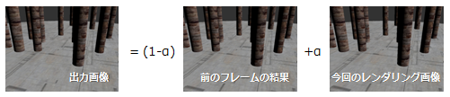
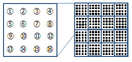
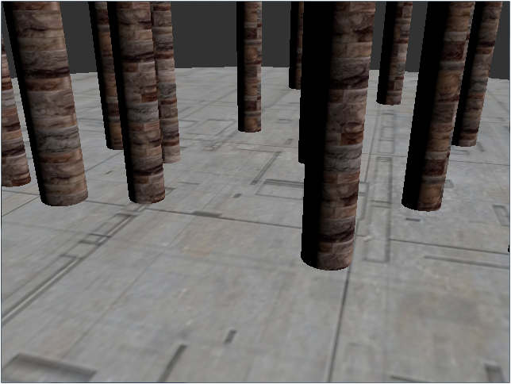
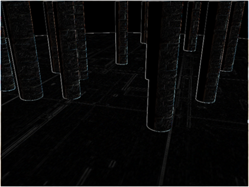
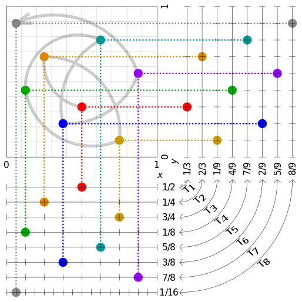
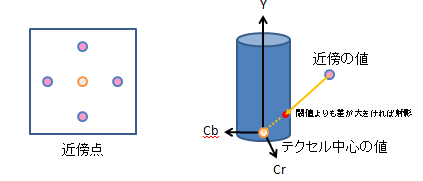
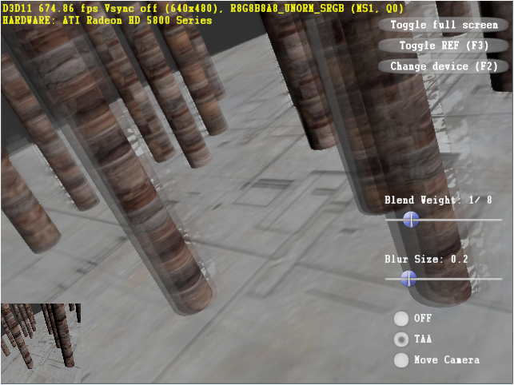

CEDEC 2014のDevelopers' NightでLTをしたので、そちらの情報の共有になります。
今年は、SIGGRAPH 2014 の Advances in Real-Time Rendering in Games を聴講できたのですが、その中で、いろいろな人が Temporal Anti-Aliasing を模索されていました。結果的にも良さそうだったので、試してみました。
今回は、特にHIGH-QUALITY TEMPORAL SUPERSAMPLING を参考にさせていただきました。
ソースコードは、GitHubに上げています。
Temporal Anti-Aliasing は、「時間的なアンチエイリアス」ということで複数のフレームのレンダリング結果を利用してエイリアシングを除去します。 複数フレームのレンダリング結果を取っておく手もあるのですが、直前のフレームの結果とブレンディングすることをつなげることで、昔のレンダリング結果の履歴を取りこむこともできます。
以前の結果を使ってエイリアシングを除去するには、以上の複数フレームの履歴を使うことと、レンダリングする点をずらすことで可能になります。 レンダリングする位置をサブピクセルとして１ピクセルの幅以内で動かすことで、レンダリング結果が各フレームで微妙に異なるので、重ね合わせるとエイリアシングを除去する効果が生まれます。
AAをかける前とかける後の結果は以下になります。
AAなし TAA差分を取って強調したのが以下です。色が白い部分がそれぞれの画像で異なる部分なので、その部分を注目して見比べてください。
なお、サンプリングとしては、単純なグリッドでサブピクセルを分割するよりも、別のサンプリングポイントを使って効率化できるということで、そこで紹介されていた、Halton列を実装してみました。確かに少ないサンプリング数でも良いエイリアシング効果が得られます。
http://en.wikipedia.org/wiki/File:Halton_sequence_2_3.svg以上の話は静的なシーンには効果的なのですが、画面が動くと残像として以前のフレームの結果が目に付いてしまいます。 そのため、動きがある部分は、以前のフレームの効果を消して、残像のない結果を作らなくてはなりません。 動いている部分を検出するには、動きベクトルやIDマップ、色の差分から大きく変化している部分を抽出する方法もありますが、 今回は、色が大きく変化していたら色を抑制する方法を試しました。
具体的には、前のフレームの周囲の色と現在のフレームの色の差分をYCbCr空間に変換し、CbCrの色味の変化が大きな部分は、閾値以内になるように差分を線形に抑制して合成しました。
結果としては、かなり残像は減るのですが、多少結果が残ったり、新しく大きく動いた部分が明るくなったりしました。 また、この方法では、結果が少しぼやけてしまうので、本当はバイラテラルフィルタ等でくっきりとした絵を作るべきでしょう。
なお、この実装の前に、色の差分から前のフレームとの合成率を変える方法も試したのですが、（ちょっとの時間のプログラミングでは）きれいに抽出することができなかったという感じなので、素敵な抽出方法がありましたら、教えてください。
もう少し改良しないと、実際の製品としては使えない感じですね。 どのような手法が定番になるでしょうか？